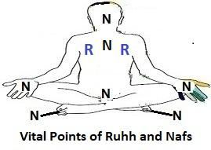
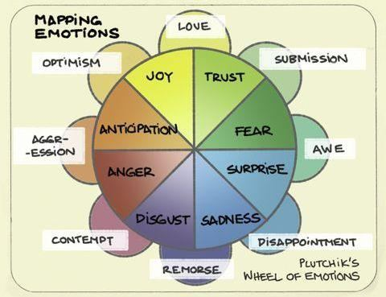

FIGURE 6.7: Vital Points of Nafs (N) and Ruh (R) The force fields that produce the nafs of a living creature originated from the Nafsin-Wahidatin (a Soul Single).

চিত্র 6_7 / Figure 6_7
চিত্র 6.7: নাফস (N) এবং রুহ (R) এর গুরুত্বপূর্ণ পয়েন্টগুলি যে শক্তি ক্ষেত্রগুলি একটি জীবন্ত প্রাণীর নফস তৈরি করে তা নাফসিন-ওয়াহিদাতিন (একটি আত্মা) থেকে উদ্ভূত হয়েছে।
চিত্র 6_7 / Figure 6_7
―He created you from a Soul Single (Nafsin- Wahidatin)…‖ [Al Quran 39:6]
"তিনি তোমাদের সৃষ্টি করেছেন এক আত্মা থেকে (নাফসিন-ওয়াহিদাতিন)..." [আল কুরআন ৩৯:৬]
In the above verse, 'Nafsin' is a singular word meaning 'a soul,' while 'Wahidatin' is used, which may mean 'one' or 'single' in the sense of 'unified,' 'fused,' or 'composite.' A nafs is a fusion of two or more force fields (ruhhs or elementary souls). Nafsin-Wahidatin' can also be translated as 'a soul provided by the One (God).' It was a provided soul because everything is created from that soul. Thus, Allah provided a vast composite soul (nafs) from His own nafs, permeating His body form, to create the universes. This provided nafs is referred to as 'Nafsin- Wahidatin' (a Single Soul) in this Tafsir. The Nafsin-Wahidatin resembles the GUT Force (comprising the forces of the Grand Unified Theory such as Electromagnetic Force, Strong Nuclear Force, and Weak Nuclear Force) that produced the Big Bang / the universe. However, there were also unknown force fields accompanying the GUT Force. The souls of living creatures were created from these unknown force fields, as the above verse says: ―He created you from Nafsin- Wahidatin…‖ [Al Quran 39:6] Moreover, there are other universes that were also created from the same Nafsin-Wahidatin. Therefore, the Nafsin-Wahidatin may be called GUT Force + (plus). Finally, the ruh of a human, which forms the mind (qalb), is directly given by Allah and does not originate from the Nafsin-Wahidatin. Thus, the human ruh is distinct. The verses under discussion narrate that Allah persistently guards His worshippers through angels. Why does Allah guard His worshippers? What is the difference between a guarded Believer and an unguarded Idolater? We find that both suffer equally from diseases and disasters. What do the angels guard? In the subsequent discussion, it will become clear that the angels guard the 'nafs' of a believer, which is of paramount importance to a human. If a human's nafs is corrupted by a satanic jinni, that person will resurrect in a devilish human form, approximately a thousand kilometers tall, and will follow the jinn into the fire of hell. Therefore, read to the end in the name of your Lord Who created. He protects His worshippers, as the verse under discussion says: ―He is the Irresistible from above over His worshippers, and He sends over you guarding (angels). At length, when comes to anyone of you the death—take him Our messengers (angels), and they never fail in their duty.‖ According to the Quran, the ruh is taken out of a human body when he sleeps and is finally detached at the time of death. But, the nafs is collected only at the time of death, as stated in the following verses:
উপরের আয়াতে 'নাফসিন' একটি একক শব্দ যার অর্থ 'একটি আত্মা', অন্যদিকে 'ওয়াহিদাতিন' ব্যবহার করা হয়েছে, যার অর্থ হতে পারে 'একীভূত', 'মিশ্রিত' বা 'যৌগিক' অর্থে 'এক' বা 'একক'। একটি নফস হল দুটি বা ততোধিক বল ক্ষেত্রের সংমিশ্রণ (রুহ বা প্রাথমিক আত্মা)। নাফসিন-ওয়াহিদাতিন'কে 'এক (ঈশ্বর) দ্বারা প্রদত্ত আত্মা' হিসাবেও অনুবাদ করা যেতে পারে। এটি একটি প্রদত্ত আত্মা ছিল কারণ সমস্ত কিছু সেই আত্মা থেকে সৃষ্টি হয়েছে। এইভাবে, আল্লাহ মহাবিশ্ব সৃষ্টির জন্য তাঁর নিজের নফস থেকে একটি বিশাল যৌগিক আত্মা (নফস) প্রদান করেছেন, তাঁর দেহের আকারে বিস্তৃত। এই প্রদত্ত নফসকে এই তাফসিরে 'নাফসিন-ওয়াহিদাতিন' (একক আত্মা) হিসাবে উল্লেখ করা হয়েছে। নাফসিন-ওয়াহিদাতিন GUT শক্তির সাথে সাদৃশ্যপূর্ণ (গ্র্যান্ড ইউনিফাইড তত্ত্বের বাহিনী যেমন ইলেক্ট্রোম্যাগনেটিক ফোর্স, স্ট্রং নিউক্লিয়ার ফোর্স এবং দুর্বল নিউক্লিয়ার ফোর্স) যা মহাবিস্ফোরণ/মহাবিশ্ব তৈরি করেছিল। যাইহোক, জিইউটি ফোর্সের সাথে অজানা বল ক্ষেত্রও ছিল। এই অজানা শক্তির ক্ষেত্রগুলি থেকে জীবিত প্রাণীদের আত্মাগুলি তৈরি করা হয়েছিল, যেমন উপরের আয়াতে বলা হয়েছে: "তিনি তোমাদের সৃষ্টি করেছেন নাফসিন-ওয়াহিদাতিন থেকে..." [আল কুরআন 39:6] তাছাড়া, অন্যান্য মহাবিশ্বও রয়েছে যেগুলি একই নাফসিন-ওয়াহিদাতিন থেকে সৃষ্টি হয়েছে। অতএব, নাফসিন-ওয়াহিদাতিনকে GUT ফোর্স + (প্লাস) বলা যেতে পারে। পরিশেষে, মানুষের রুহ, যা মন (ক্বালব) গঠন করে, তা সরাসরি আল্লাহ প্রদত্ত এবং নাফসিন-ওয়াহিদাতিন থেকে উদ্ভূত নয়। সুতরাং, মানুষের রুহ স্বতন্ত্র। আলোচ্য আয়াতগুলি বর্ণনা করে যে আল্লাহ অবিচলভাবে ফেরেশতাদের মাধ্যমে তাঁর উপাসকদের রক্ষা করেন। আল্লাহ কেন তার বান্দাদের হেফাজত করেন? একজন রক্ষিত বিশ্বাসী এবং একজন অরক্ষিত মুশরিকের মধ্যে পার্থক্য কী? আমরা দেখতে পাই যে উভয়ই রোগ এবং দুর্যোগে সমানভাবে ভোগে। ফেরেশতারা কি পাহারা দেয়? পরবর্তী আলোচনায় এটা পরিষ্কার হয়ে যাবে যে ফেরেশতারা একজন মুমিনের 'নফস' হেফাজত করে, যা একজন মানুষের জন্য অত্যন্ত গুরুত্বপূর্ণ। যদি কোন মানুষের নফস কোন শয়তানী জিনি দ্বারা কলুষিত হয়, তবে সেই ব্যক্তিটি প্রায় এক হাজার কিলোমিটার লম্বা শয়তান মানব রূপে পুনরুত্থিত হবে এবং জ্বীনদের অনুসরণ করবে জাহান্নামের আগুনে। অতএব, শেষ পর্যন্ত পড়ুন আপনার প্রভুর নামে যিনি সৃষ্টি করেছেন। তিনি তাঁর উপাসকদের রক্ষা করেন, যেমন আলোচ্য আয়াতে বলা হয়েছে: “তিনি তাঁর উপাসকদের উপর থেকে অপ্রতিরোধ্য এবং তিনি তোমাদের উপর প্রহরী (ফেরেশতাদের) প্রেরণ করেন। দীর্ঘ সময়ে, যখন তোমাদের কারো মৃত্যু আসে - তাকে আমাদের দূত (ফেরেশতাদের) নিয়ে যান, এবং তারা কখনই তাদের দায়িত্বে ব্যর্থ হয় না।'' কুরআন অনুসারে, রুহ যখন একজন মানুষের শরীর থেকে ঘুমিয়ে থাকে এবং অবশেষে মৃত্যুর সময় বিচ্ছিন্ন হয়। কিন্তু, নফসগুলি শুধুমাত্র মৃত্যুর সময় সংগ্রহ করা হয়, যেমনটি নিম্নলিখিত আয়াতগুলিতে বলা হয়েছে:
―O nafs in rest and satisfaction, come back thou to the Lord well pleased and well-pleasing unto Him. Enter thou then among My devotees! Yea, enter thou My Jannaat!‖ [Al Quran 89: 27-30]
- হে বিশ্রাম ও সন্তুষ্টিতে নফস, তুমি প্রভুর কাছে ফিরে এসো যে তাঁর কাছে সন্তুষ্ট ও সন্তুষ্ট। তাহলে তুমি আমার ভক্তদের অন্তর্ভুক্ত হয়ে যাও! হ্যাঁ, তুমি আমার জান্নাতে প্রবেশ কর!'' [আল কুরআন ৮৯:২৭-৩০]
So, the nafs sustains the human body as a living entity. The nafs is discussed under the following headings: 7. Nature of a Nafs 8. Role of a Nafs 9. Resurrection and the Nafs 10. Need of Guarding
তাই নফস মানবদেহকে জীবন্ত সত্তা হিসেবে টিকিয়ে রাখে। নফস সম্পর্কে নিম্নলিখিত শিরোনামে আলোচনা করা হয়েছে: 7. একটি নফসের প্রকৃতি 8. একটি নফসের ভূমিকা 9. পুনরুত্থান এবং নফস 10. হেফাজতের প্রয়োজন
7. Nature of a Nafs
7. একটি Nafs প্রকৃতি
The nafs is one's primary soul. It possesses basic urges, including the instincts for survival and reproduction. Therefore, it is the center of greed, which stems from these fundamental urges. A person's basic human nature is rooted in the nature of their nafs.
নফস হল একজনের প্রাথমিক আত্মা। এটি বেঁচে থাকার এবং প্রজননের সহজাত প্রবৃত্তি সহ মৌলিক তাগিদ ধারণ করে। অতএব, এটি লোভের কেন্দ্র, যা এই মৌলিক তাগিদ থেকে উদ্ভূত হয়। একজন ব্যক্তির মৌলিক মানবিক প্রকৃতি তার নফসের প্রকৃতির মধ্যে নিহিত।
―By the nafs, and the proportion and order given to it, and its enlightenment as to its wrong and its right; truly he succeeds that purifies it and fails that corrupts it!‖ [Al Quran 91: 7-10]
- নফসের দ্বারা, এবং এটিকে প্রদত্ত অনুপাত ও আদেশের দ্বারা, এবং এটির ভুল ও সঠিক সম্পর্কে তার জ্ঞানের দ্বারা; প্রকৃতপক্ষে সে সফল হয় যে এটিকে শুদ্ধ করে এবং ব্যর্থ হয় যে এটিকে কলুষিত করে!'' [আল কুরআন 91: 7-10]
The verses above indicate that a nafs is given proportion and order. It is likely that this proportion refers to unknown (yet to be discovered) force fields that, in combination, form a nafs. Each of these force fields inherently possesses two or more emotions by origin. However, the scientific understanding of the origin of emotions is different: ―Emotions are biological states associated with the nervous system brought on by neurophysiological changes variously associated with thoughts, feelings, behavioural responses, and a degree of pleasure or displeasure.‖– Wikipedia, the Free Encyclopedia Psychologist Robert Plutchik states that there are eight basic emotions: joy, sadness; trust, disgust; fear, anger; surprise, anticipation.
উপরের আয়াতগুলি নির্দেশ করে যে একটি নফসকে অনুপাত এবং ক্রম দেওয়া হয়েছে। সম্ভবত এই অনুপাতটি অজানা (এখনও আবিষ্কৃত) বল ক্ষেত্রগুলিকে বোঝায় যা সংমিশ্রণে একটি নফস গঠন করে। এই বল ক্ষেত্রগুলির প্রতিটিরই জন্মগতভাবে দুই বা ততোধিক আবেগ রয়েছে। যাইহোক, আবেগের উত্স সম্পর্কে বৈজ্ঞানিক উপলব্ধি ভিন্ন: "আবেগগুলি হল স্নায়ুতন্ত্রের সাথে সম্পর্কিত জৈবিক অবস্থা যা চিন্তা, অনুভূতি, আচরণগত প্রতিক্রিয়া, এবং আনন্দ বা অসন্তুষ্টির সাথে বিভিন্নভাবে যুক্ত নিউরোফিজিওলজিক্যাল পরিবর্তন দ্বারা সৃষ্ট। আনন্দ, দুঃখ; বিশ্বাস, বিরক্তি; ভয়, রাগ; বিস্ময়, প্রত্যাশা
FIGURE 6.8: Plutchik‘s Wheel of Emotions

চিত্র 6_8 / Figure 6_8
চিত্র 6.8: Plutchik এর আবেগের চাকা
চিত্র 6_8 / Figure 6_8
On the other hand, from a religious perspective, emotions may be an inherent effect of our souls, as discussed below: Everything is conscious. A subatomic particle, moving through space as wave, becomes a particle when observed (as demonstrated by the Double Slit Experiment). Therefore, it is conscious and exhibits the emotion necessary to act accordingly. Similarly, forces and energies might also be conscious, possessing emotions to act as needed. A ruh is an elementary force field, while a nafs is a composite force field. These force fields, associated with the soul, may produce the biological states of emotions through their actions within the human body. A human ruh possesses two emotions—happiness and joy—while the nafs encompasses the rest, such as fear, greed, anger, love, and others. Only humans experience happiness and joy. For example, if a person has ten goats and slaughters one in front of the others, the remaining goats do not become sad because they do not have ruhs. However, other emotions, such as fear, anger, and aggression, are present in animals to varying degrees, as they possess nafses. Thus, the words, ―By the nafs, and the proportion and order given to it…,‖ in the Quran [91:7-10] refers to the proportion and order of unknown (yet to be discovered) force fields that constitute a nafs. For example, if the force field that generates the emotion of fear is stronger in a person's nafs, that individual is generally more cowardly. The above verses also discuss the enlightenment of the nafs: ―…and its enlightenment as to its wrong and its right….‖ The knowledge of right and wrong resides in the brain, which enlightens the nafs through electrical impulses. However, not all nafses are equally enlightened: Negative impulses originating from wrong memories and negative emotions can prevent a nafs from becoming fully enlightened. The whispering of satanic jinn, which taints the nafs, may interfere with its enlightenment. The possession by satanic jinn can deeply darken a nafs. There may be other factors as well. A nafs can be purified and enlightened by the light of Allah, but Allah will cleanse and enlighten only those He chooses. Allah is present everywhere. He is closer to us than our jugular veins. We do not see Him because He exists beyond the veils (dimensions). His light is not revealed in our known three-dimensional world. A small portion was revealed to Moses, which caused the mountain to burn. Even the Earth cannot withstand the intensity of His light, as narrated by Hazrat Rabeya Basri, a Muslim saint. However, the light of Allah can expose within a human body through his ruh and nafs. Thus, a human being can be a 'Home of Allah,' as highlighted in the following verses:
অন্যদিকে, ধর্মীয় দৃষ্টিকোণ থেকে, আবেগ আমাদের আত্মার একটি অন্তর্নিহিত প্রভাব হতে পারে, যা নীচে আলোচনা করা হয়েছে: সবকিছুই সচেতন। একটি উপপারমাণবিক কণা, তরঙ্গ হিসাবে স্থানের মধ্য দিয়ে চলে, যখন পর্যবেক্ষণ করা হয় তখন একটি কণা হয়ে যায় (ডাবল স্লিট পরীক্ষা দ্বারা প্রদর্শিত)। অতএব, এটি সচেতন এবং সেই অনুযায়ী কাজ করার জন্য প্রয়োজনীয় আবেগ প্রদর্শন করে। একইভাবে, শক্তি এবং শক্তিগুলিও সচেতন হতে পারে, প্রয়োজন অনুযায়ী কাজ করার জন্য আবেগের অধিকারী। একটি রুহ একটি প্রাথমিক বল ক্ষেত্র, যখন একটি নফস একটি যৌগিক বল ক্ষেত্র। এই বল ক্ষেত্রগুলি, আত্মার সাথে যুক্ত, মানবদেহের মধ্যে তাদের কর্মের মাধ্যমে আবেগের জৈবিক অবস্থা তৈরি করতে পারে। একজন মানুষের রুহের মধ্যে দুটি আবেগ থাকে-সুখ এবং আনন্দ-যখন নফস বাকিগুলোকে ধারণ করে, যেমন ভয়, লোভ, রাগ, ভালবাসা এবং অন্যান্য। শুধুমাত্র মানুষই সুখ এবং আনন্দ অনুভব করে। উদাহরণস্বরূপ, যদি একজন ব্যক্তির দশটি ছাগল থাকে এবং অন্যদের সামনে একটি জবাই করে, তবে অবশিষ্ট ছাগলগুলি দুঃখিত হয় না কারণ তাদের রুহ নেই। যাইহোক, অন্যান্য আবেগ, যেমন ভয়, রাগ এবং আগ্রাসন, প্রাণীদের মধ্যে বিভিন্ন মাত্রায় উপস্থিত থাকে, কারণ তারা নফসেস রাখে। সুতরাং, "নফস দ্বারা, এবং এটিকে দেওয়া অনুপাত এবং আদেশের দ্বারা...," কুরআনে [91:7-10] শব্দগুলি অজানা (এখনও আবিষ্কৃত) বল ক্ষেত্রগুলির অনুপাত এবং ক্রম বোঝায় যা একটি নফস গঠন করে। উদাহরণস্বরূপ, যদি একজন ব্যক্তির নফসে ভয়ের আবেগ তৈরি করে এমন শক্তির ক্ষেত্রটি শক্তিশালী হয় তবে সেই ব্যক্তিটি সাধারণত আরও কাপুরুষ। উপরোক্ত আয়াতগুলো নফসের আলোকিতকরণ সম্পর্কেও আলোচনা করে: “…এবং এর ভুল ও সঠিক সম্পর্কে তার জ্ঞান…..” সঠিক ও ভুলের জ্ঞান মস্তিষ্কে থাকে, যা বৈদ্যুতিক আবেগের মাধ্যমে নফসকে আলোকিত করে। যাইহোক, সমস্ত নফস সমানভাবে আলোকিত হয় না: ভুল স্মৃতি এবং নেতিবাচক আবেগ থেকে উদ্ভূত নেতিবাচক আবেগ একটি নফসকে সম্পূর্ণরূপে আলোকিত হতে বাধা দিতে পারে। শয়তান জিনের ফিসফিসানি, যা নফসকে কলঙ্কিত করে, এর জ্ঞানার্জনে হস্তক্ষেপ করতে পারে। শয়তান জ্বীনের দখল একটি নফসকে গভীরভাবে অন্ধকার করতে পারে। অন্যান্য কারণও থাকতে পারে। একটি নফসকে আল্লাহর নূর দ্বারা পরিশুদ্ধ ও আলোকিত করা যেতে পারে, তবে আল্লাহ কেবলমাত্র যাদেরকে বেছে নেবেন তাদেরকেই পবিত্র ও আলোকিত করবেন। আল্লাহ সর্বত্র বিরাজমান। তিনি আমাদের শিরা শিরার চেয়েও কাছের। আমরা তাকে দেখতে পাই না কারণ তিনি পর্দার বাইরে (মাত্রা) বিদ্যমান। তার আলো আমাদের পরিচিত ত্রিমাত্রিক জগতে প্রকাশ পায় না। একটি ছোট অংশ মুসার কাছে প্রকাশ করা হয়েছিল, যার কারণে পর্বতটি জ্বলেছিল। এমনকি পৃথিবীও তাঁর আলোর তীব্রতা সহ্য করতে পারে না, যেমনটি হযরত রাবেয়া বসরী নামে একজন মুসলিম সাধক বর্ণনা করেছেন। যাইহোক, আল্লাহর নূর তার রুহ ও নফসের মাধ্যমে মানবদেহে উদ্ভাসিত হতে পারে। সুতরাং, একজন মানুষ 'আল্লাহর গৃহ' হতে পারে, যা নিম্নোক্ত আয়াতে তুলে ধরা হয়েছে:
―Allah is the light of the Skies and Lands. The parable of his light is as if there were a niche and within it a lamp. The lamp enclosed in glass; the glass as if it were a brilliant star. Lit from a blessed tree, an olive, neither of the east nor of the west. Whose oil is well-nigh luminous though fire scarce touched it. Light upon light! Allah does set forth parables for men, and Allah knows all things. In houses, which Allah has permitted to be raised to honor for the celebration in them of His name. In them is He glorified in the mornings and in the evenings. They are such men whom neither business nor trade can drive from the remembrance neither of Allah, nor from regular prayer, nor from the practice of regular charity; their fear is for the day when hearts and eyes will be transformed‖ [Al Quran 24: 35–37]
-আল্লাহ আকাশ ও জমিনের নূর। তাঁর আলোর দৃষ্টান্ত যেন একটি কুলুঙ্গি এবং তার মধ্যে একটি প্রদীপ। কাঁচে ঘেরা বাতি; গ্লাসটি যেন একটি উজ্জ্বল তারা। একটি বরকতময় গাছ থেকে আলোকিত, একটি জলপাই, না পূর্ব না পশ্চিমের. যার তেল খুব কাছেই উজ্জ্বল, যদিও আগুনের ছোঁয়া লাগেনি। আলোর উপর আলো! আল্লাহ মানুষের জন্য দৃষ্টান্ত বর্ণনা করেন এবং আল্লাহ সবকিছু জানেন। গৃহগুলিতে, যেগুলিকে আল্লাহ তাঁর নামে উদযাপনের জন্য সম্মানের জন্য উত্থাপন করার অনুমতি দিয়েছেন। তাদের মধ্যে তিনি সকালে ও সন্ধ্যায় মহিমান্বিত। তারা এমন লোক, যাদের ব্যবসা-বাণিজ্য কোনোটাই আল্লাহর স্মরণ থেকে, নিয়মিত সালাত বা নিয়মিত দান-খয়রাত থেকে চলতে পারে না; তাদের ভয় সেই দিনের জন্য যেদিন অন্তর ও চোখ পরিবর্তিত হবে” [আল কুরআন 24: 35-37]
According to the above verses, the light of Allah is present everywhere and may be revealed within His beloved people. In these verses, the glass represents the human body, and the flame inside the glass symbolizes the exposed light of Allah. People with such illuminated nafs are elevated [The verses are deliberately discussed in Chapter-24].
উপরোক্ত আয়াত অনুসারে আল্লাহর নূর সর্বত্র বিরাজমান এবং তা তাঁর প্রিয় মানুষের মধ্যে প্রকাশ পেতে পারে। এই আয়াতগুলিতে, কাচ মানবদেহের প্রতিনিধিত্ব করে, এবং কাঁচের ভিতরের শিখা আল্লাহর উদ্ভাসিত আলোর প্রতীক। এই ধরনের আলোকিত নফের লোকেরা উচ্চতর হয় [আয়াতগুলি ইচ্ছাকৃতভাবে অধ্যায়-24 এ আলোচনা করা হয়েছে]।
8. The Role of a Nafs
8. একটি Nafs ভূমিকা
A nafs acts on both the body and the brain. It influences the mind (qalb / mind / virtual brain) through its vital point in the chest. Its activities are discussed under the following headings: a. Nafs helps Qalb (Mind) b. Urges of Survival and Reproduction c. Nafs acting directly d. Nafs sensing anti-creatures, like jinns e. Nafs and the Third Eye f. Nafs and Whisper of Satanic Jinn g. Nafs and Sexual Drive h. Nafs build Character i. Nafs and Self-restraint 8a. Nafs helps Qalb (Mind)
একটি নফস শরীর এবং মস্তিষ্ক উভয়ের উপর কাজ করে। এটি বুকের গুরুত্বপূর্ণ বিন্দুর মাধ্যমে মনকে (ক্বালব/মন/ভার্চুয়াল মস্তিষ্ক) প্রভাবিত করে। এর কার্যক্রম নিম্নলিখিত শিরোনামে আলোচনা করা হয়েছে: ক. নফস কলবকে সাহায্য করে (মন) খ. বেঁচে থাকার তাগিদ এবং প্রজনন গ. নফস সরাসরি অভিনয় ঘ. নফস বিরোধী জীবানুভূতি, জ্বীনের মত ই. নফস এবং তৃতীয় চোখ চ. শয়তান জ্বীনের নফস ও ফিসপার g. নফস এবং যৌন ড্রাইভ জ. নফস চরিত্র নির্মাণ i. নফস ও আত্মসংযম ৮ ক. নফস কলবকে সাহায্য করে (মন)
―It is God that (makes) the nafses die (yatawaffa) at their death; and the one who die not, in their sleep. Then keeps the one whom He has decreed for them the death, and sends the others for a term specified. Verily, in that are signs for a people who reflect.‖ [Al Quran 39:42]
-আল্লাহই নফসেদের মৃত্যু ঘটান (ইয়াওয়াফ্ফা)। এবং যারা মরে না, তাদের ঘুমের মধ্যে। অতঃপর যাকে তিনি তাদের জন্য মৃত্যু নির্ধারণ করেছেন তাকে রাখেন এবং অন্যদেরকে নির্দিষ্ট মেয়াদের জন্য পাঠান। নিঃসন্দেহে এতে চিন্তাশীল সম্প্রদায়ের জন্য নিদর্শন রয়েছে।” [আল কুরআন 39:42]
The above verse states that God causes the nafses to die at the time of death and during sleep: ―It is God that (makes) the nafses die (yatawaffa) at their death; and the one who die not, in their sleep…‖ But if it is the body that dies; how can a nafs die? And, what is 'dying' during sleep? As discussed earlier, the ruh connects to a muscle in the chest and functions as the platform of mind (qalb / virtual brain). The nafs connects to the mind through a vital point of the same muscle and infuses nafs-related emotions into the mind. Therefore, when the ruh is taken out of the body, the mind is dismantled, and the nafs becomes inactive. In this state, a person sleeps because his mind is dismantled. During sleep, the nafs remains in the body but in an inactive state. In the verse above, this inactive state of the nafs is considered the 'death of the nafs,' allowing a person to experience a deep, sound sleep. A human dies permanently in two steps. In the first step, Allah seizes the ruh, rendering the person unconscious. In the second step, the nafs is collected by the angels, leading to permanent death. Simply put, a person falls asleep (becomes unconscious) when the ruh is taken out of the body, and he dies when the nafs is taken out from the body. The Angel of Death collects the nafs, while the ruh is always collected by Allah Himself.
উপরোক্ত আয়াতে বলা হয়েছে যে, আল্লাহ মৃত্যুর সময় এবং ঘুমের সময় নফসেদের মৃত্যু ঘটান: “আল্লাহই নফসেদের মৃত্যু ঘটান (ইয়াওয়াফ্ফা)। এবং যে মরে না, ঘুমের মধ্যে...' কিন্তু যদি দেহই মরে; একজন নফস কিভাবে মারা যেতে পারে? আর, ঘুমের সময় 'মরা' কি? যেমনটি আগে আলোচনা করা হয়েছে, রুহ বুকের একটি পেশীর সাথে সংযোগ স্থাপন করে এবং মনের প্ল্যাটফর্ম (ক্বালব/ভার্চুয়াল মস্তিষ্ক) হিসাবে কাজ করে। নফস একই পেশীর একটি গুরুত্বপূর্ণ বিন্দুর মাধ্যমে মনের সাথে সংযোগ স্থাপন করে এবং নফস-সম্পর্কিত আবেগকে মনের মধ্যে প্রবেশ করায়। অতএব, যখন রুহ শরীর থেকে বের করা হয়, তখন মন ভেঙে যায় এবং নফস নিষ্ক্রিয় হয়ে যায়। এই অবস্থায়, একজন ব্যক্তি ঘুমায় কারণ তার মন ভেঙে যায়। ঘুমের সময় নফস শরীরে থাকে কিন্তু নিষ্ক্রিয় অবস্থায় থাকে। উপরের আয়াতে, নফসের এই নিষ্ক্রিয় অবস্থাকে 'নফসের মৃত্যু' হিসাবে বিবেচনা করা হয়েছে, যা একজন ব্যক্তিকে গভীর, নিদ্রা অনুভব করতে দেয়। একজন মানুষ দুই ধাপে স্থায়ীভাবে মারা যায়। প্রথম ধাপে, আল্লাহ রুহকে আটক করেন, ব্যক্তিকে অজ্ঞান করে দেন। দ্বিতীয় ধাপে ফেরেশতাদের দ্বারা নফস সংগ্রহ করা হয় যা স্থায়ী মৃত্যুর দিকে পরিচালিত করে। সহজ কথায়, শরীর থেকে রূহ বের করা হলে একজন ব্যক্তি ঘুমিয়ে পড়ে (অজ্ঞান হয়ে যায়) এবং শরীর থেকে নফস বের করার সময় সে মারা যায়। মৃত্যুর ফেরেশতা নফস সংগ্রহ করেন, যখন রুহ সর্বদা আল্লাহ নিজেই সংগ্রহ করেন।
8b. Urges of Survival and Reproduction
8 খ. বেঁচে থাকা এবং প্রজননের তাগিদ
Fear is a primary emotion of the nafs. Fear relates to the urge for survival. The brain receives information about fear from sensory organs such as eyes, ears, nose, and tongue. The brain assesses the danger and energizes the mind, which then drives the body‘s responses according to the emotions of the mind. Human ruhs and nafses are complex and diverse, generating different emotions in varying degrees and prompting the brain to respond differently. Some people confront fear, some flee, and others do nothing. However, the nafses of beasts are almost uniform, leading them to respond similarly. The brain sends out electric pulses of fear. However, if it were solely a matter of electric pulses and muscles, the entire body would be equally affected, as every cell is connected to a nerve. While the brain does send pulses of fear throughout the body, the emotion is most vividly felt in the vital areas of the nafs. The center of the nafs is located below the navel, so nearby body parts experience the emotion of fear more intensely. This is why extreme fear can cause pain in the lower back, sensations in the lower stomach, shivering in the legs, and even urination. Similarly, the brain sends pulses of sadness and joy throughout the body, but these emotions are primarily felt in the chest. In extreme joy, the chest tends to expand, while in extreme sadness, it tends to constrict, because sadness and joy are ruh-related emotions, and the ruh is located in the chest. A beast has only a nafs, so it experiences only nafs- related emotions, such as fear, aggression, anger, love, disgust, and so forth. It lacks a ruh, so it does not experience ruh-related emotions such as sorrow and happiness. For example, if one slaughters a sheep in front of other sheep, they do not feel unhappiness. Only dogs show signs of what appears to be happiness when they see their masters. However, this is not true happiness; it is an expression of love, which is related to their nafs. Their enthusiastic behaviors when greeting their masters are similar to the playful acts seen among puppies. A dog remains like a puppy to its master throughout its life because the master nurtures and feeds it like a mother. Therefore, the waves of brain are translated and experienced as fear, sorrow, joy, and other emotions by the nafs and ruh. The nafs and ruh, according to their inherent natures, then inspire the brain to act through the mind. A human brain plays a key role by producing hormones. For example, the brain produces a hormone that helps withstand fear by stabilizing the body and releasing extra energy. The production of the hormone takes time. For instance, when flying by an aircraft, the fear of flying is often suppressed after about an hour, indicating that the hormone takes around an hour to form and suppress the fear. 8c. Nafs acting directly
ভয় নফসের একটি প্রাথমিক আবেগ। ভয় বেঁচে থাকার তাগিদের সাথে সম্পর্কিত। মস্তিষ্ক চোখ, কান, নাক এবং জিভের মতো সংবেদনশীল অঙ্গ থেকে ভয় সম্পর্কে তথ্য পায়। মস্তিষ্ক বিপদের মূল্যায়ন করে এবং মনকে শক্তি জোগায়, যা মনের আবেগ অনুযায়ী শরীরের প্রতিক্রিয়াগুলিকে চালিত করে। মানুষের রুহ এবং নফসগুলি জটিল এবং বৈচিত্র্যময়, বিভিন্ন মাত্রায় বিভিন্ন আবেগ তৈরি করে এবং মস্তিষ্ককে ভিন্নভাবে প্রতিক্রিয়া জানাতে প্ররোচিত করে। কিছু লোক ভয়ের মুখোমুখি হয়, কেউ পালিয়ে যায় এবং অন্যরা কিছুই করে না। যাইহোক, জন্তুদের নফসেস প্রায় অভিন্ন, যা তাদেরকে একইভাবে সাড়া দেয়। মস্তিষ্ক ভয়ের বৈদ্যুতিক স্পন্দন পাঠায়। যাইহোক, যদি এটি শুধুমাত্র বৈদ্যুতিক স্পন্দন এবং পেশীর বিষয় হয় তবে সমগ্র শরীর সমানভাবে প্রভাবিত হবে, কারণ প্রতিটি কোষ একটি স্নায়ুর সাথে সংযুক্ত। যদিও মস্তিষ্ক সারা শরীরে ভয়ের স্পন্দন পাঠায়, আবেগটি সবচেয়ে স্পষ্টভাবে অনুভূত হয় নাফসের গুরুত্বপূর্ণ এলাকায়। নফসের কেন্দ্রটি নাভির নীচে অবস্থিত, তাই কাছাকাছি শরীরের অঙ্গগুলি আরও তীব্রভাবে ভয়ের অনুভূতি অনুভব করে। এই কারণেই চরম ভয়ের কারণে পিঠের নীচের অংশে ব্যথা, পেটের নীচের অংশে সংবেদন, পায়ে কাঁপুনি এবং এমনকি প্রস্রাব হতে পারে। একইভাবে, মস্তিষ্ক সারা শরীরে দুঃখ এবং আনন্দের স্পন্দন পাঠায়, তবে এই আবেগগুলি প্রাথমিকভাবে বুকে অনুভূত হয়। চরম আনন্দে, বুক প্রসারিত হতে থাকে, যখন চরম দুঃখে, এটি সংকুচিত হতে থাকে, কারণ দুঃখ এবং আনন্দ হল রুহ-সম্পর্কিত আবেগ, এবং রুহ বুকে অবস্থিত। একটি পশুর শুধুমাত্র একটি নফস আছে, তাই এটি শুধুমাত্র নফস-সম্পর্কিত আবেগ অনুভব করে, যেমন ভয়, আগ্রাসন, রাগ, প্রেম, ঘৃণা এবং আরও অনেক কিছু। এতে রুহের অভাব রয়েছে, তাই এটি দুঃখ এবং সুখের মতো রুহ-সম্পর্কিত আবেগ অনুভব করে না। উদাহরণস্বরূপ, যদি কেউ অন্য ভেড়ার সামনে একটি ভেড়া জবাই করে তবে তারা অসুখী হয় না। শুধুমাত্র কুকুরই তাদের প্রভুদের দেখে সুখী বলে মনে হয় তার লক্ষণ দেখায়। যাইহোক, এটি প্রকৃত সুখ নয়; এটা ভালোবাসার বহিঃপ্রকাশ, যা তাদের নফসের সাথে সম্পর্কিত। তাদের মাস্টারদের অভিবাদন করার সময় তাদের উত্সাহী আচরণ কুকুরছানাদের মধ্যে দেখা যায় এমন কৌতুকপূর্ণ আচরণের মতো। একটি কুকুর সারা জীবন তার মালিকের কাছে কুকুরছানার মতো থাকে কারণ মাস্টার তাকে মায়ের মতো লালন-পালন করে এবং খাওয়ায়। অতএব, মস্তিষ্কের তরঙ্গগুলিকে ভয়, দুঃখ, আনন্দ এবং অন্যান্য আবেগ হিসাবে অনুবাদ করা হয় এবং অনুভব করা হয় নফস এবং রুহ দ্বারা। নফস ও রুহ তাদের অন্তর্নিহিত স্বভাব অনুযায়ী মস্তিষ্ককে মনের মাধ্যমে কাজ করতে উদ্বুদ্ধ করে। একটি মানব মস্তিষ্ক হরমোন উত্পাদন করে একটি মূল ভূমিকা পালন করে। উদাহরণস্বরূপ, মস্তিষ্ক একটি হরমোন তৈরি করে যা শরীরকে স্থিতিশীল করে এবং অতিরিক্ত শক্তি মুক্ত করে ভয় সহ্য করতে সহায়তা করে। হরমোন উৎপাদনে সময় লাগে। উদাহরণস্বরূপ, একটি বিমানে উড়ে যাওয়ার সময়, প্রায় এক ঘন্টা পরে উড়ার ভয়কে দমন করা হয়, যা নির্দেশ করে যে হরমোনটি তৈরি করতে এবং ভয়কে দমন করতে প্রায় এক ঘন্টা সময় নেয়। 8 গ. নফস সরাসরি অভিনয়
In some cases, the nafs can act without the deliberate help of the brain. The nafs, being a composite force field, can store certain information that acts based on the vision of mind rather than the calculations of brain. The brain requires some time to assess a danger, especially when the threat is approaching quickly. The nafs, however, is designed with certain pre-existing information and is trained to respond based on minimal nerve data of nodal points scattered throughout the body. The brain's assessment follows this initial reaction, determining the degree of fear and guiding any further necessary actions. In some cases, a nafs may not need light received in the mind through the eyes even. The nafs is a combination of unknown force fields. It may sense the emitted light of an object dangerously coming from the back and move the body instantly.
কিছু ক্ষেত্রে, নফস মস্তিষ্কের ইচ্ছাকৃত সাহায্য ছাড়াই কাজ করতে পারে। নফস, একটি যৌগিক শক্তি ক্ষেত্র হওয়ায়, কিছু তথ্য সংরক্ষণ করতে পারে যা মস্তিষ্কের গণনার পরিবর্তে মনের দৃষ্টিভঙ্গির উপর ভিত্তি করে কাজ করে। একটি বিপদ মূল্যায়ন করার জন্য মস্তিষ্কের কিছু সময় প্রয়োজন, বিশেষ করে যখন হুমকিটি দ্রুত এগিয়ে আসছে। nafs, তবে, কিছু পূর্ব-বিদ্যমান তথ্য দিয়ে ডিজাইন করা হয়েছে এবং সারা শরীরে ছড়িয়ে ছিটিয়ে থাকা নোডাল পয়েন্টের ন্যূনতম স্নায়ু ডেটার উপর ভিত্তি করে প্রতিক্রিয়া জানাতে প্রশিক্ষিত। মস্তিষ্কের মূল্যায়ন এই প্রাথমিক প্রতিক্রিয়া অনুসরণ করে, ভয়ের মাত্রা নির্ধারণ করে এবং আরও প্রয়োজনীয় ক্রিয়াকলাপের নির্দেশনা দেয়। কিছু ক্ষেত্রে, একটি নফস এমনকি চোখের মাধ্যমে মনের মধ্যে প্রাপ্ত আলো প্রয়োজন নাও হতে পারে. নফস হল অজানা বল ক্ষেত্রগুলির সংমিশ্রণ। এটি একটি বস্তুর নির্গত আলো বিপজ্জনকভাবে পিছন থেকে আসা অনুভব করতে পারে এবং তাত্ক্ষণিকভাবে শরীরকে সরাতে পারে।
8d. Nafs sensing anti-creatures, like jinns
8d. নফস জ্বীনদের মত বিরোধী প্রাণীর অনুভূতি
Some force fields interact with antimatter, much like gravity affects both matter and antimatter. An animal's nafs is a combination of unknown force fields, some of which can sense and act on antimatter. This is why a nafs might detect the presence of anti-creatures in a house, causing a person to feel scared in a haunted house, even if he is unaware that it is haunted. 8e. Nafs and the Third Eye
কিছু বল ক্ষেত্র প্রতিপদার্থের সাথে মিথস্ক্রিয়া করে, যেমন মহাকর্ষ পদার্থ এবং প্রতিপদার্থ উভয়কেই প্রভাবিত করে। একটি প্রাণীর নফস হল অজানা বল ক্ষেত্রগুলির সংমিশ্রণ, যার মধ্যে কিছু অনুধাবন করতে পারে এবং প্রতিপদার্থের উপর কাজ করতে পারে। এই কারণেই একটি নফস একটি বাড়িতে বিরোধী প্রাণীর উপস্থিতি সনাক্ত করতে পারে, যার ফলে একজন ব্যক্তি একটি ভুতুড়ে বাড়িতে ভীত বোধ করতে পারে, এমনকি যদি সে জানে না যে এটি ভূতুড়ে রয়েছে। 8ই. নফস এবং তৃতীয় চোখ
The nafs possesses an invisible eye on the forehead—one of its vital points—that is not fully developed during life on Earth. This eye (vital point) will develop after death and will be compatible with the resurrected body. In the afterlife, a resurrected human will be able to see anti- creatures, such as jinns. If this third eye were to develop during earthly life, it might enable a person to see jinns and other anti- creatures, which could be a frightening experience. In the afterlife, those destined for hell (galaxies within this universe) will become giants, making the sight of jinns and other anti-creatures an ordinary affair.
নফসের কপালে একটি অদৃশ্য চোখ রয়েছে - এটির গুরুত্বপূর্ণ পয়েন্টগুলির মধ্যে একটি - যা পৃথিবীতে জীবনের সময় সম্পূর্ণরূপে বিকশিত হয় না। এই চোখ (গুরুত্বপূর্ণ পয়েন্ট) মৃত্যুর পরে বিকাশ করবে এবং পুনরুত্থিত শরীরের সাথে সামঞ্জস্যপূর্ণ হবে। পরবর্তী জীবনে, একজন পুনরুত্থিত মানুষ জ্বিনের মতো বিরোধী প্রাণী দেখতে পাবে। যদি এই তৃতীয় চোখটি পার্থিব জীবনে বিকশিত হয়, তবে এটি একজন ব্যক্তিকে জিন এবং অন্যান্য বিরোধী প্রাণী দেখতে সক্ষম করে, যা একটি ভীতিকর অভিজ্ঞতা হতে পারে। পরের জীবনে, যারা নরকের জন্য নির্ধারিত (এই মহাবিশ্বের মধ্যে গ্যালাক্সি) তারা দৈত্য হয়ে উঠবে, জ্বিন এবং অন্যান্য বিরোধী প্রাণীদের দেখা একটি সাধারণ ব্যাপার করে তুলবে।
8f. Nafs and Whisper of the Satanic Jinn
8f. শয়তান জ্বীনের নফস ও ফিসফাস
The nafs, being a combination of unknown force fields, is affected by the whispers of satanic jinns, which allure sinful deeds. These whispers, created by invisible anti- creatures, might originate from positrons. The positrons could interact with the electrons of the human nafs, producing photons that carry information. The nafs then produces the vision of sin in the mind with the help of the brain. The right hemisphere of the brain may vitalize thought, while the left hemisphere may plan the corresponding actions. If the drive of the brain is not tempered by knowledge or the nature of the ruh and nafs, the whisper may lead to sin. 8g. Nafs and Sexual Drive
নফস, অজানা শক্তির ক্ষেত্রগুলির সংমিশ্রণ হওয়ায়, শয়তানী জিনদের ফিসফিস দ্বারা প্রভাবিত হয়, যা পাপ কাজকে আকৃষ্ট করে। এই ফিসফাস, অদৃশ্য বিরোধী প্রাণী দ্বারা সৃষ্ট, পজিট্রন থেকে উদ্ভূত হতে পারে। পজিট্রনগুলি মানুষের নফসের ইলেকট্রনের সাথে যোগাযোগ করতে পারে, তথ্য বহন করে এমন ফোটন তৈরি করে। নফস তখন মস্তিষ্কের সাহায্যে মনের মধ্যে পাপের দৃষ্টি উৎপন্ন করে। মস্তিষ্কের ডান গোলার্ধ চিন্তাকে প্রাণবন্ত করতে পারে, যখন বাম গোলার্ধ সংশ্লিষ্ট কর্মের পরিকল্পনা করতে পারে। যদি মস্তিষ্কের চালনা জ্ঞানের দ্বারা বা রুহ ও নফসের প্রকৃতির দ্বারা সংযত না হয় তবে ফিসফিস গুনাহের দিকে নিয়ে যেতে পারে। 8 গ্রাম। নফস এবং সেক্সুয়াল ড্রাইভ